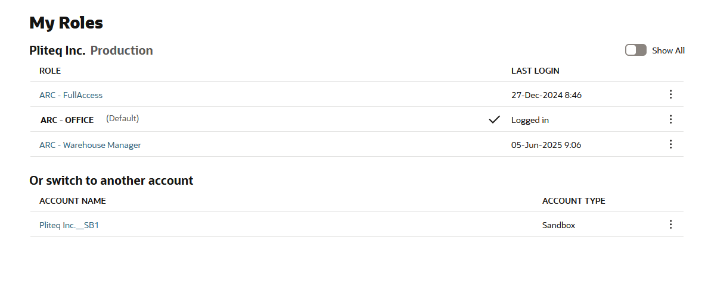
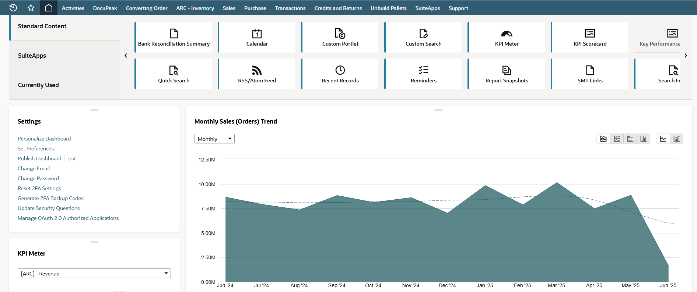

1. Intro to NetSuite in Pliteq - ARC
- Login & Roles: Open NetSuite in your browser and log in using company credentials. You will be using the Office and Warehouse Manager roles.

- Customize: Feel free to personalize your dashboard layout.

- Navigation: Use the ribbon to access our main features in NetSuite.
- Transactions(Warehouse Manager and Office): Mostly used to view and create Sales Orders (SO) and Order Acknowledgments (OA).
- Sales(Office): Used to manage customers and interactions with them.
- ARC WMS (Warehouse Manager): Used to mark orders as picked, packed, or shipped.
- When generating OAs or having the AI create them, you will have to ensure that the information on the PO we are given matches the sales order on NetSuite--price, quantity, item, etc.